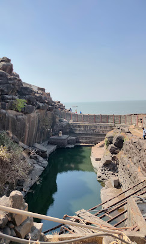

खंडेरी किल्ला
Location : Click Here For Google Map
- माहिती
- खंडेरी किल्ला महाराष्ट्र राज्याच्या रायगड जिल्ह्यात स्थित एक ऐतिहासिक किल्ला आहे. हा किल्ला अरब सागराच्या किनाऱ्यावर वसलेला आहे, आणि कोलाबा किल्ल्याच्या जवळ स्थित आहे. खंडेरी किल्ल्याची रचना आणि स्थापत्यशास्त्र समुद्रातील संरक्षणासाठी अत्यंत सामरिकदृष्ट्या महत्त्वाची होती.
किल्ल्याची बांधणी १७व्या शतकात केली गेली होती. किल्ला मुघल साम्राज्याच्या काळात सिद्दी सुलतानांनी बांधला होता. किल्ल्याच्या भिंती आणि दरवाज्यातील संरचनांमध्ये सामरिक दृष्टिकोनातून महत्त्वपूर्ण रचना होती, ज्यामुळे किल्ल्याचे रक्षण करणे शक्य झाले.
खंडेरी किल्ल्याच्या मुख्य आकर्षणांमध्ये त्याचे उंच शिखर, भव्य दरवाजे, आणि समुद्राची अप्रतिम दृश्ये आहेत. किल्ल्याच्या शिखरावरून संपूर्ण समुद्र आणि आसपासचा परिसर पाहता येतो. किल्ल्याची रचना त्याच्या समयाच्या संरक्षणात्मक गरजांसाठी महत्त्वपूर्ण ठरली.
आजकाल, खंडेरी किल्ला एक लोकप्रिय पर्यटन स्थळ आहे, जिथे पर्यटक ऐतिहासिक महत्त्व असलेल्या या किल्ल्याची रचना आणि समुद्र काठील सौंदर्य अनुभवण्यासाठी येतात.
Explore the historical beauty
